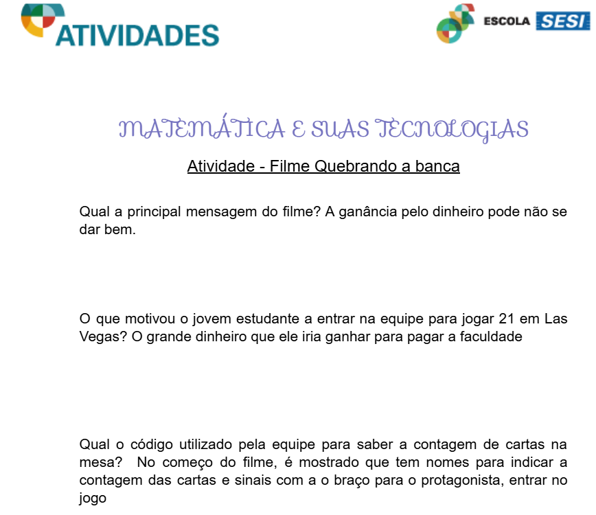

Primeiro Trimestre
Atividade Criando a Banca
Link: Visualizar Desing do Canva
Nesse trabalho eu e meu grupo fizemos um jogo, muitos semelhante ao jogo "21" porém, adicionamos novas mecânicas para deixar o jogo mais divertido. Achei um método bem legal de estudar probabilidades e criativo. Habilidades: H30 e H31

Atividade Filme Quebrando a Banca
Link: Visualizar Design no Canva
Nessa atividade, eu respondi algumas perguntas referente ao filme Quebrando a Banca, gostei bastante do filme, achei bem interessante como eles tratam mesmo que pouco a questão de probabilidade no filme. Habilidades: H31 e H32
